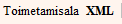

Artikli tööriistad
Sõnastikutöös saab jagada kolme etappi: sõnaartikli koostamine, toimetamine ja peatoimetamine. Tavaliselt kasutatakse kahekihilist tööstiili (koostamine ja peatoimetamine või toimetamine ja peatoimetamine - vastavalt toimetuse kokkuleppele). EELex võimaldab eristada kõiki kolme etappi vastavate etapi lõpu märgetega, mida nimetatakse Artikli tööriistadeks. Vajalikud on need sõnastikutöö seisu hindamiseks (nt aruandluse jaoks andmete hankimiseks või teisele töötajale tööjärje üle andmiseks). Päringuga (näiteks Toimetamisala ülaservas valides otsitavaks elemendiks näiteks koostamise lõpp ja tippides otsiaknase tärni *) saab välja võtta kõik artiklid, mille koostamine on lõpetatud või mis on täiesti valmise ehk peatoimetatud jne. Lisaks on siia alla toodud ka artikli ühest köitest teise liigutamise tööriist.Olemasolevaid koostamise, toimetamise ja peatoimetamise märkeid saab näha artikli XML-vaates, mille avab nupp XML Toimetamisalal .
Artikli tööriistade menüü avaneb EELexi süsteemis nupule
 klõpsamisel ja selles menüüs on järgmised valikud.
klõpsamisel ja selles menüüs on järgmised valikud.Lisa koostamise lõpu märge - Koostamise lõpu märget kasutatakse siis, kui koostaja on oma töö lõpetanud ja soovib sellest toimetaja(te)le märku anda. Artiklisse lisatakse element x:KL (koostamise lõpu aeg).
Eemaldakoostamise lõpu märge - Mõnikord on vaja tagasi pöörduda algse koostatud variandi juurde, selleks tuleb koostamise lõpu märge selle menüü abil artiklist kustutada. Seda saab teha ainult artikli koostaja (x:K) või peatoimetaja (x:PT). Seda funktsiooni kasutatakse vastavalt vajadusele.
Lisa toimetamise lõpu märge - Kui toimetaja on toimetamise lõpetanud, lisab ta artikli tööriistade menüü abil toimetamise lõpu märke, mille peale süsteem lisab ning täidab elemendi x:TL (toimetamise lõpu aeg).
Eemalda toimetamise lõpu märge - Toimetamise lõpu märge (element x:TL) kustutatakse artiklist.
Lisa peatoimetaja märge - Artiklisse lisanduvad ja täituvad elemendid x:PT (peatoimetaja kasutajanimi) ja x:PTA (peatoimetamise aeg) ja artiklit enam muuta ei saa. Seda märget saab artiklis olla vaid üks.
Eemalda peatoimetaja märge - Artiklist kustutatakse elemendid x:PT (peatoimetaja kasutajanimi) ja x:PTA (peatoimetamise aeg) ning artiklit saab jälle muuta. Vajalik näiteks korrektuuri lugemise käigus leitud vigade parandamiseks.
Vii teise köitesse - Artikli liigutamiseks ühest köitest teise. Valiku valimisel avaneb dialoogiaken, milles saad valida köite, millesse artiklit soovid üle viia. Üheköitelise sõnastiku puhul on valikus vaid üks köide.
Seotud tekstid: Eeldefineeritud elemendid.